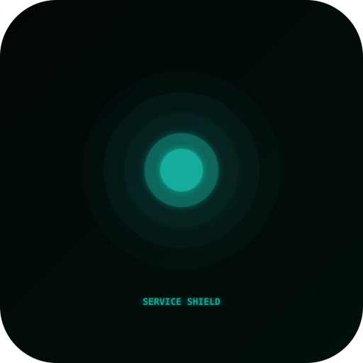
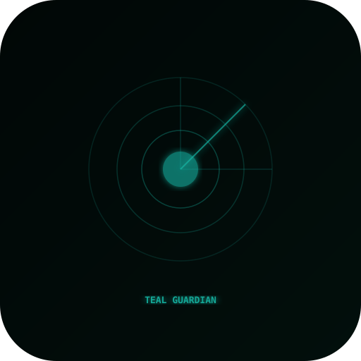
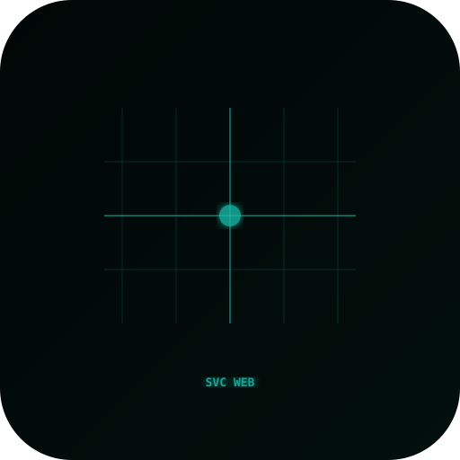
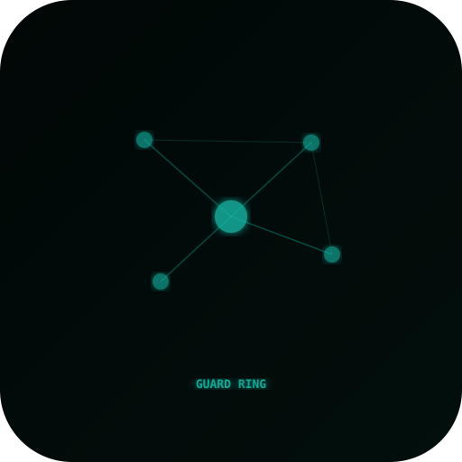
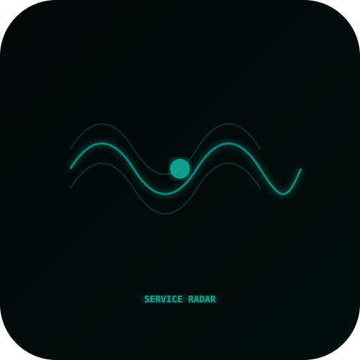
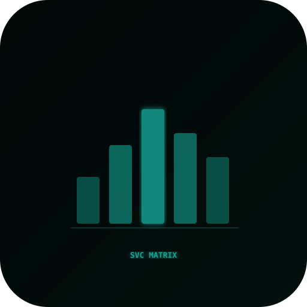
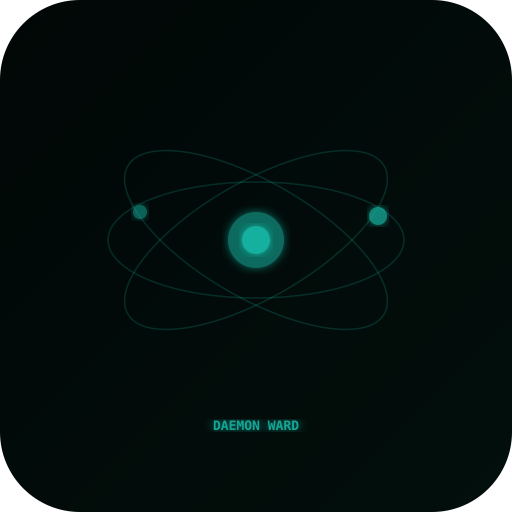

10 candidates

서비스 쉴드candidate_01_service_shield.svg
틸 가디언candidate_02_teal_guardian.svg
서비스 웹candidate_03_svc_web.svg
가드 링candidate_04_guard_ring.svg
서비스 레이더candidate_05_service_radar.svg
서비스 매트릭스candidate_08_svc_matrix.svg
데몬 워드candidate_09_daemon_ward.svg